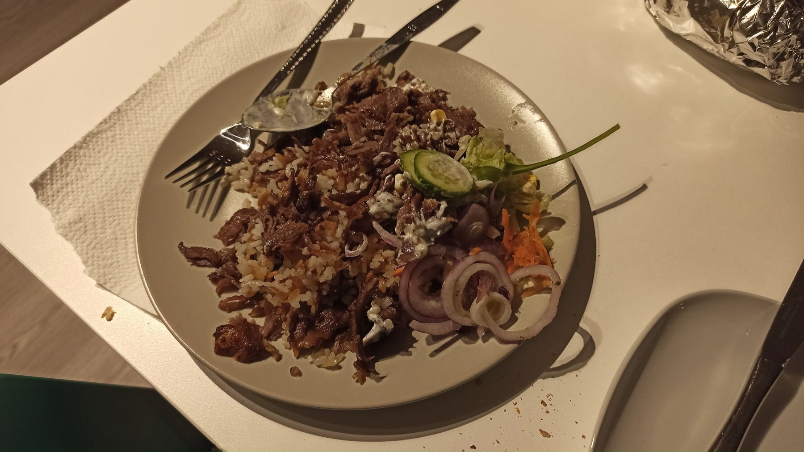
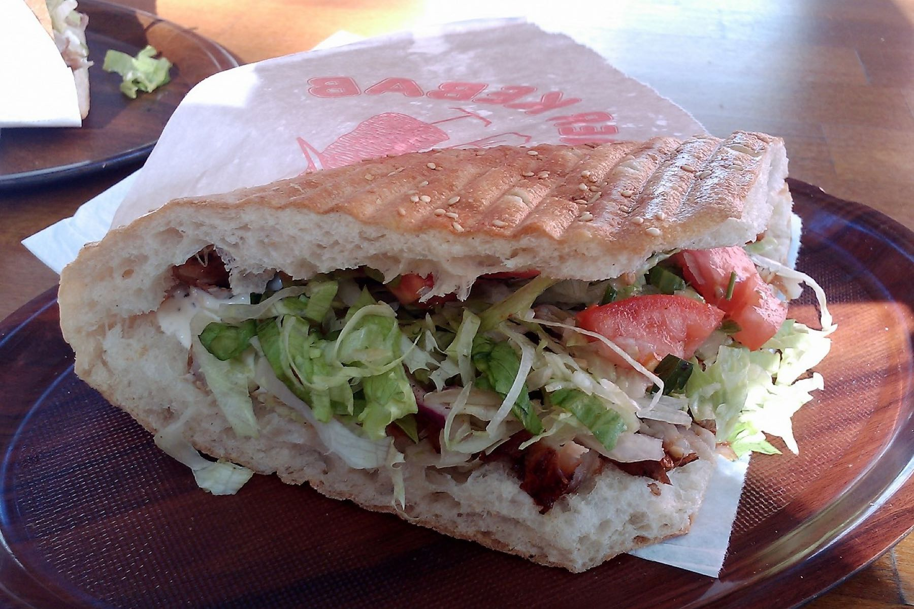
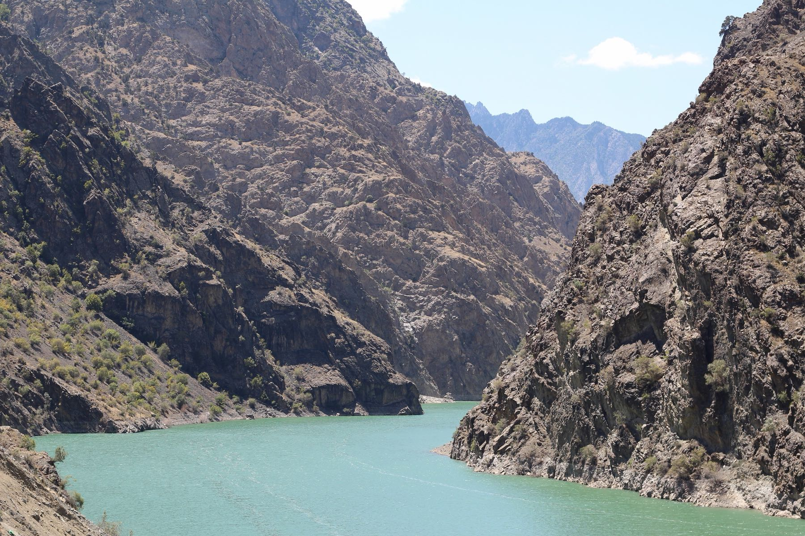

Adını Çoruh’tan alan bir döner; tadı Eskişehir’de.

Ocaktan Çoruh’a
Tezgâhtan, adını aldığı vadiye.


Öğle arası yaklaştı.
İletişim
Paket sipariş için arayın; toplu siparişlerde önceden haber verin.
Telefon(0222) 224 10 08
Saatler
- PazartesiKapalı
- Salı12:00–22:30
- Çarşamba12:00–22:30
- Perşembe12:00–22:30
- Cuma12:00–22:30
- Cumartesi12:00–22:30
- Pazar12:00–22:30